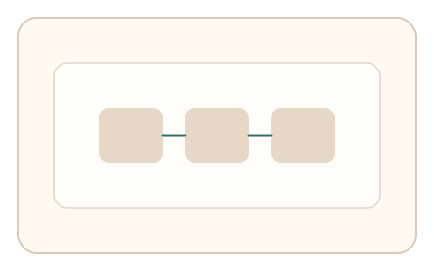
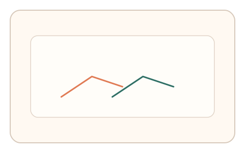
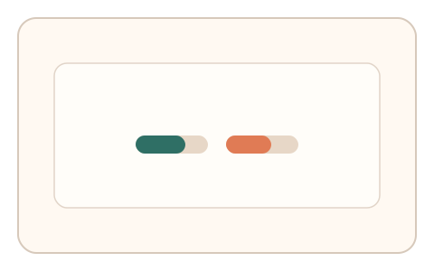

#168
Reverse Brainstorming - Round 3
已扩展
交错微任务一致性
在多微任务中切换动力学参数，判定依赖跨任务一致性与节律结构。
概念原文
在连续 2–3 个微任务中随机切换动力学参数，判定依赖跨任务的相对一致性与节律结构。
对抗轨迹需要在多场景中保持一致，成本显著上升。
研究背景
交错微任务增加了策略迁移要求，真实用户在不同任务中会保持相似节律与适应模式，而脚本难以在多场景保持一致。
核心机制
- 连续 2–3 个微任务随机切换参数。
- 记录每段节律、路径与适应速度。
- 比较跨任务一致性与漂移。
- 以一致性阈值判定。
用户流程
- 步骤 1：用户完成第一段微任务。
- 步骤 2：系统切换参数进入下一段。
- 步骤 3：系统分析跨任务一致性。
判定信号
跨任务节律一致性
真实节律结构在不同任务中仍相似。
适应速度差异
适应能力在多任务中保持稳定。
判定逻辑
一致性需落在人类区间；过度一致或无规律漂移判异常。
对抗面
- 脚本固定路径跨任务复用
- 随机化轨迹伪装
防御与缓解
- 任务参数与顺序随机化
- 加入段间扰动与时间间隔
- 多信号耦合评估
可达性与风险
提供慢速与简化版本，减少负担。
- 多任务导致疲劳
- 设备差异影响适应速度
可视化状态

状态 1：交错任务
多段微任务交错出现。

状态 2：跨段信号
记录节律与适应速度。

状态 3：一致性判定
比较跨任务一致性。
参考资料
Task switching
说明多任务切换与成本。
Motor learning
说明跨任务适应与稳定性。